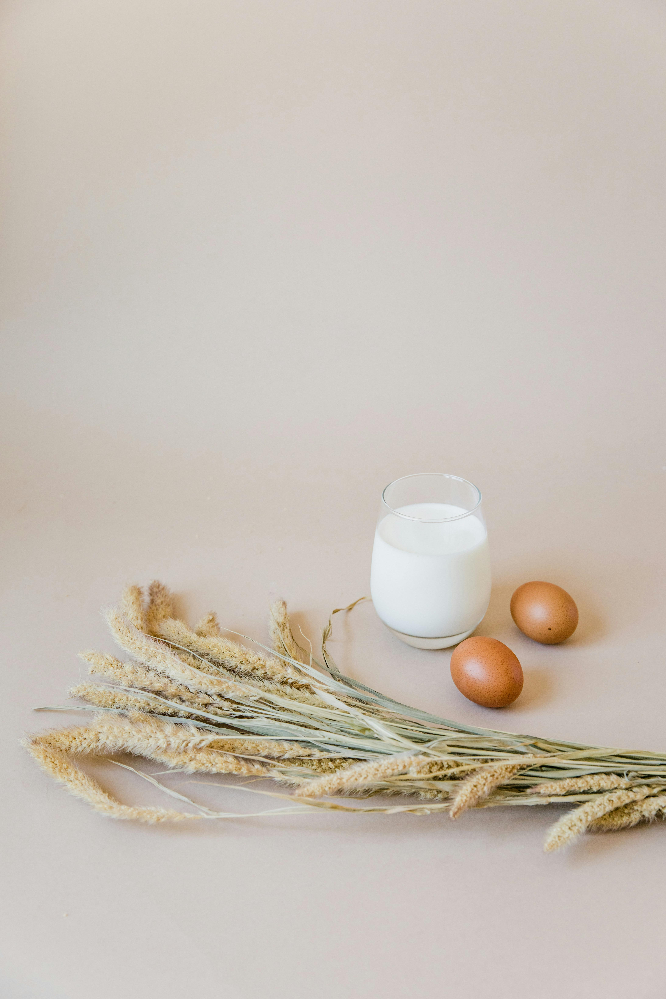
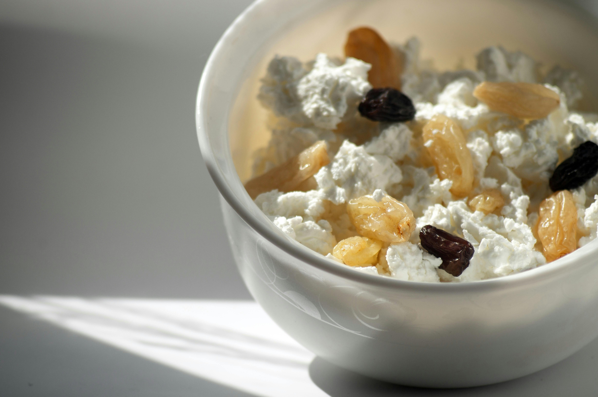
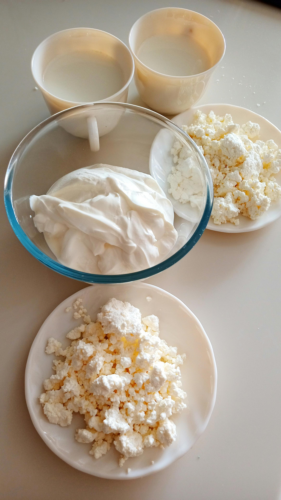

Wyjątkowe mleczne produkty
Odkryj bogactwo smaków jogurtów, kefirów, świeżych śmietan i tradycyjnych mlecznych deserów. Naturalna jakość i autentyczne receptury w każdej degustacji!
-

- 
-

- 
Nasza Historia
Dairy Lemon to miejsce, gdzie naturalna jakość spotyka się z tradycją mleczarstwa. Specjalizujemy się w degustacji najlepszych produktów mlecznych, takich jak rzemieślnicze jogurty, kefiry, śmietany oraz wyjątkowe mleczne desery. Nasza oferta obejmuje wyłącznie produkty pochodzące od sprawdzonych, lokalnych dostawców, dbających o najwyższe standardy jakości i smaku.
Nasze degustacje to nie tylko możliwość spróbowania wyjątkowych smaków, ale także szansa na poznanie sekretów naturalnej fermentacji i mleczarskich tradycji. Dzięki doświadczeniu naszych ekspertów odkryjesz, jak mleczne produkty mogą stać się niezastąpionym elementem zdrowej i pełnowartościowej diety.
Naszym celem jest dzielenie się pasją do mlecznych specjałów i oferowanie degustacji, które łączą tradycję, jakość i autentyczne doznania smakowe. Wybierając Dairy Lemon, wybierasz prawdziwy smak natury!
Nasze Korzyści
-
01
Naturalna Jakość
Wszystkie nasze produkty mleczne pochodzą od lokalnych dostawców, którzy dbają o naturalne metody produkcji. Bez konserwantów, sztucznych dodatków i ulepszaczy – tylko czysty, autentyczny smak.
-
02
Unikalne Smaki
Degustacja Dairy Lemon to okazja do spróbowania rzadkich i tradycyjnych mlecznych przysmaków. Od rzemieślniczych kefirów po wyjątkowe, naturalne desery mleczne.
-
03
Korzyści Zdrowotne
Nasze produkty mleczne są bogate w probiotyki i wartościowe składniki odżywcze, które wspierają zdrową dietę i poprawiają funkcjonowanie układu trawiennego.
Skontaktuj się z nami
Masz pytania dotyczące degustacji naszych mlecznych produktów? Chcesz dowiedzieć się więcej o terminach wydarzeń? Wypełnij formularz, a my się z Tobą skontaktujemy!
Kontakt
Masz pytania? Skontaktuj się z nami!
-
📍
Adres: ul. Nowy Świat 15, Warszawa, Polska
-
📞
Telefon: +48 412 139 522
-
📧
Email: info@dairy-lemon.com